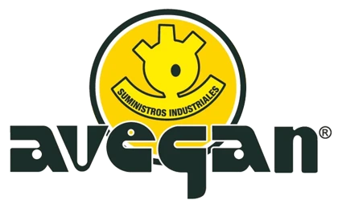
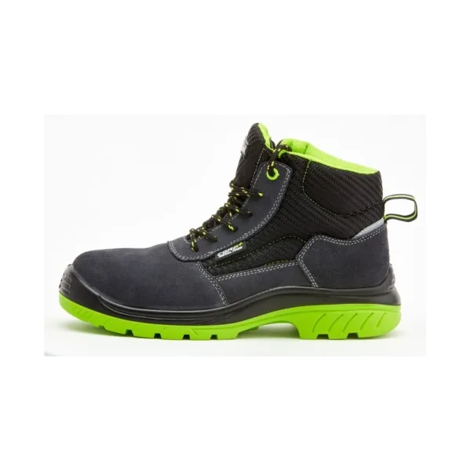
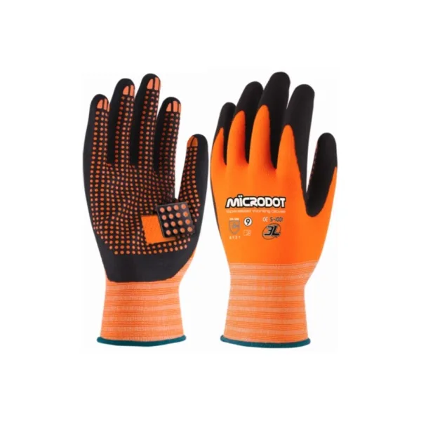
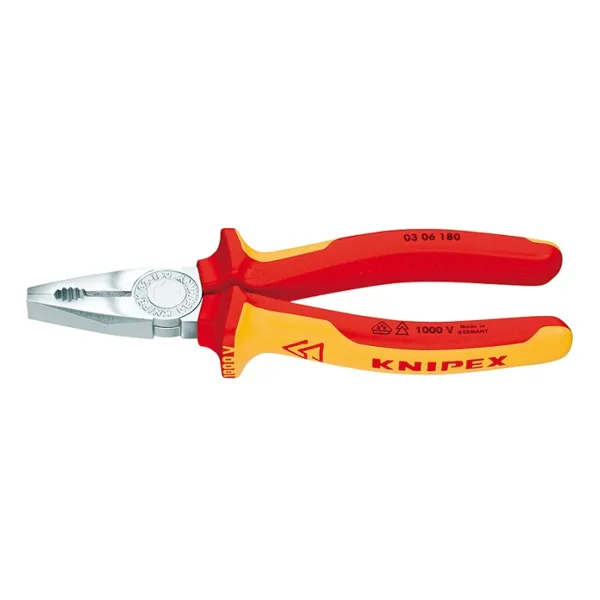
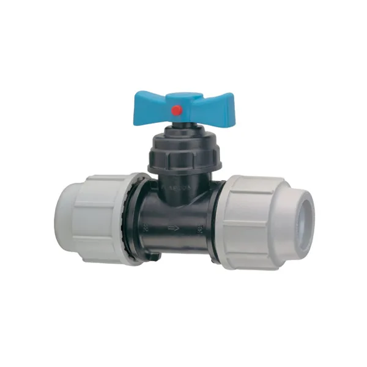
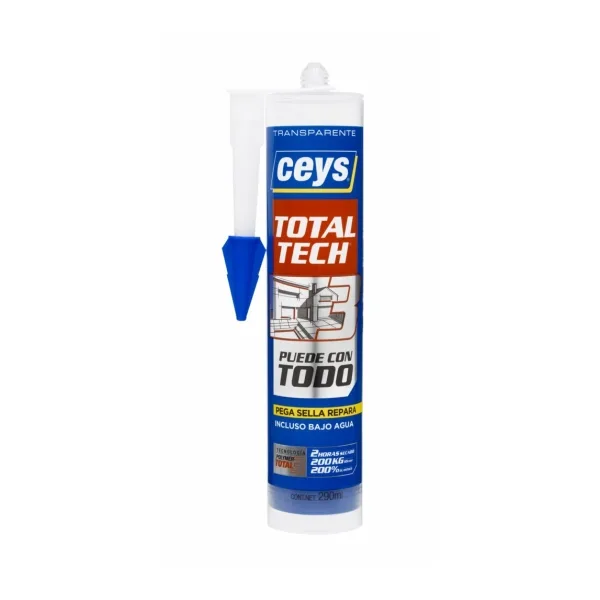
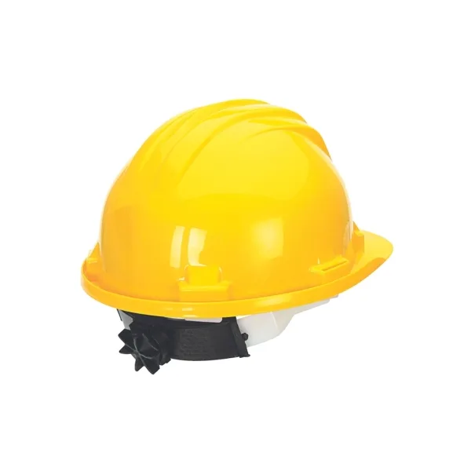
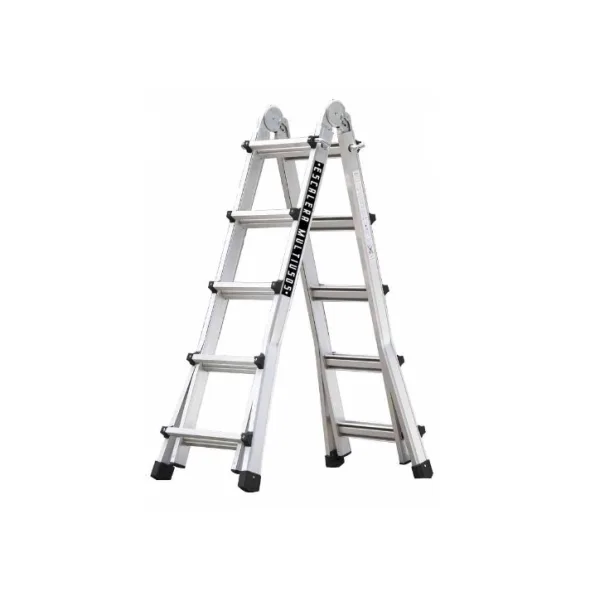

Un cliente entra en la tienda online y pregunta «busco botas de seguridad talla 44 para obra, ¿qué tenéis?». Avi le contesta como lo haría alguien del mostrador de Finestrat: le pregunta lo justo (para qué trabajo es y la talla o la medida) y le enseña los artículos de vuestro catálogo que encajan, con su precio y su ficha. También atiende envíos, pedidos, devoluciones, presupuestos para obra o empresa, el alquiler de maquinaria y lo que solo tenéis en la tienda física.
Pulsad una pregunta y Avi la contesta en el chat. Los artículos, precios y condiciones son los vuestros; los pedidos son de ejemplo.
Pregunta la talla o la medida si falta y propone dos o tres artículos que están en stock, con precio y enlace, explicando por qué encajan según vuestra ficha.
Enlaces, válvulas y reducciones de polietileno por diámetro, con la rosca que corresponde.
Orienta entre siliconas, adhesivos y selladores por lo que dice cada ficha, sin inventar lo que no pone.
Da los precios de la web como referencia y recoge nombre, empresa, teléfono, artículos y cantidades para que el equipo de Finestrat llame con precio por volumen.
Maquinaria de alquiler, gases industriales, copias de llaves: no dice que no lo tenéis, manda a la tienda que toca y toma nota.
Pide el número y cuenta en qué punto está con la agencia. Si el barco a Baleares se retrasa, el cliente ya lo sabe porque Avi le avisó.
Vuestras zonas, plazos y formas de pago, tal y como están publicadas. El coste del envío lo deja para la web, que es quien lo calcula.
Pide el número de pedido y una foto, explica lo que dicen vuestras condiciones y lo pasa a vuestro equipo. No promete plazos ni reenvíos.
Ejemplo con un pedido de la muestra.
Retrasos de la agencia, pagos recibidos y pedidos que salen: el cliente se entera por vosotros y no tiene que preguntar. En esta muestra el mensaje es de ejemplo y no se envía a nadie.
Datos de vuestra web. Cada tarjeta abre la ficha en avegan.es.







Los datos son vuestros, leídos de avegan.es el 27 de octubre de 2026: los 1.174 artículos de la tienda online con su precio, su referencia, su familia y su ficha (la web los tiene repetidos dos veces; aquí van una), vuestras condiciones de envío, plazos, pago, cancelación y devoluciones, los datos de la tienda de Finestrat y de FerrOkey Villajoyosa, y lo que ofrecéis fuera de la web: alquiler de maquinaria, apertura de puertas 24 horas, duplicado de llaves y pintura a la carta.